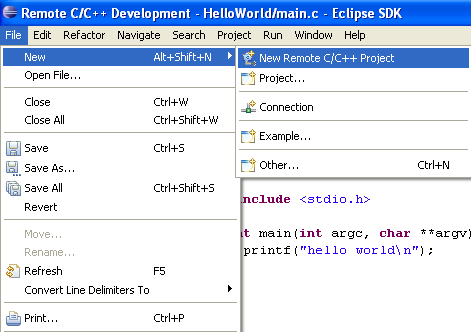
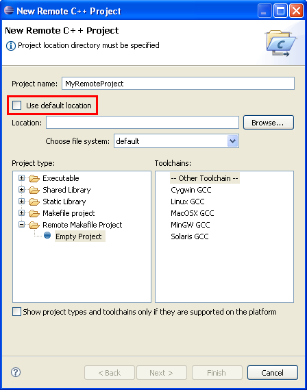
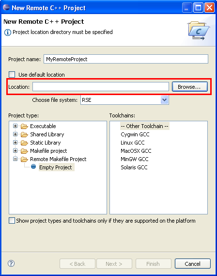
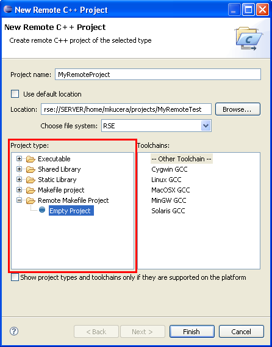
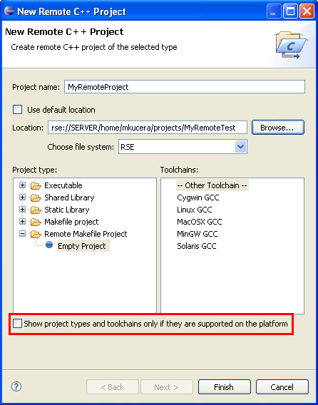
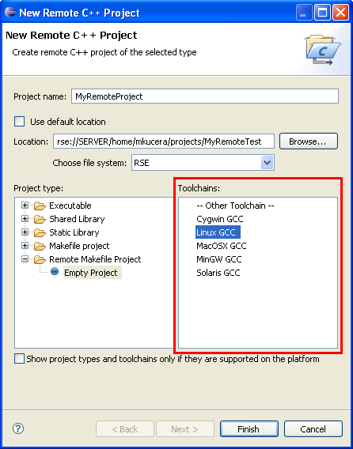
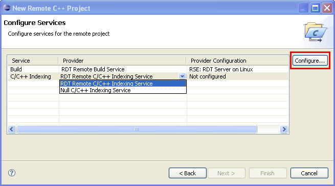

Creating a Remote C/C++ Project
Before creating a Remote C/C++ Project it is recommended that you
have already established a connection to a remote RDT server.
Remote C/C++ Project Wizard
Disclaimer: The Remote C/C++ Project Wizard is based on the CDT new project wizard which
was originally designed to create local projects. Therefore some aspects of the wizard
interface are not ideal for the scenario of creating a remote project. The remote project
must be set up correctly or it will not work properly. The following steps describe in
detail what must be done to correctly set up a remote project.
-
To create a new Remote C/C++ Project begin by opening the
New Remote C/C++ Project Wizard by going to
File > New > New Remote C/C++ Project.
 New > New Remote C/C++ Project">
-
Enter the project name.

-
Uncheck the checkbox that says Use default location. The default location
is the local file system which is not appropriate for remote projects.

-
Choose a file system type for hosting the remote project. RDT currently ships with the RSE
file system, so it is recommended that you choose that. Do not choose default
because the default file system is the local file system.

-
Now the location of the project root folder must be entered into the Location field.
This field requires a correctly formatted URI (Uniform Resource Identifier). If you do not know the
URI of the project folder then it is recommended that you use the Browse... button.

-
If you have chosen RSE as the file system then the RSE Browse for Folder dialog will appear.
In this dialog first choose a connection to a running RDT server.

-
Choose a folder and click OK.

-
The URI of the chosen folder will appear in the Location field.
You may create a sub-folder by editing the URI and adding the name of the sub-folder
at the end.

-
In the Project type field expand Remote Makefile Project and select
Empty Project. If this project type is not chosen then executing remote
builds will not work.

-
At the bottom of the wizard uncheck the checkbox that says Show project types and toolchains
only if they are supported on the platform. If this checkbox is checked then the wizard
will filter out what it thinks are unsupported toolchains. Unfortunately the wizard only examines
the local machine for supported toolchains and does not examine the remote machine where the project
will be located.

-
Select a toolchain. A toolchain is a set of tools (such as a compiler, linker, and assembler)
intended to build your project.

-
Click Next.
-
The next page of the wizard allows you to select available build configurations.
It is not necessary to make any changes on this page because additional build
configurations can be created after the project has been created.
Click Next.

-
The next page of the wizard requires you to manually configure RDT services.
First configure the Build service. Select RDT Remote Build Service
as the service provider, then click Configure.

-
Select the same provider and connection that you used on the first page of the wizard
then click OK.

-
Now configure the C/C++ Indexing service. Select RDT Remote C/C++ Indexing Service
as the service provider, then click Configure.

-
Select the same connection that you used on the first page of the wizard, then click OK.

-
Click Finish. Creating the project may take a few minutes. Once the project has been
created it will appear in the Project Explorer view.